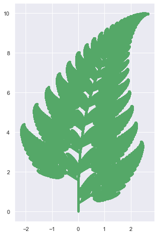
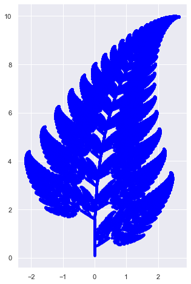
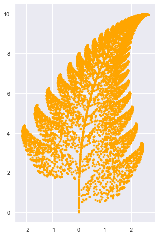

Project: Fractals
Fern :
Fern can be created by implementation of if loops and while loop. We will discuss three different approaches to create fern.
Method 1: Direct implementation
import matplotlib.pyplot as plt
import seaborn as sns
import random as random
%matplotlib inline
sns.set()
import random as random
x = 0
y = 0
X = [x]
Y = [y]
n=1
isprint = False
while n < 1000000:
r = random.uniform(0,100)
if r < 1.0:
x = 0
y = 0.16*Y[n-1]
X.append(x) ; Y.append(y)
elif r > 1.0 and r < 86.0:
x = 0.85*X[n-1] + 0.04*Y[n-1]
y = -0.04*X[n-1] + 0.85*Y[n-1]+1.6
X.append(x);Y.append(y)
elif r > 86.0 and r < 93.0:
x = 0.2*X[n-1] - 0.26*Y[n-1]
y = 0.23*X[n-1] + 0.22*Y[n-1] + 1.6
X.append(x);Y.append(y)
elif r > 93.0 and r < 100.0:
x = -0.15*X[n-1] + 0.28*Y[n-1]
y = 0.26*X[n-1] + 0.24*Y[n-1] + 0.44
X.append(x);Y.append(y)
if isprint:
print("step: ",n,"random number is: ", r, "coordinate is : ", x,y)
n = n+1
plt.figure(figsize = [5,8])
plt.scatter(X,Y,color = 'g',marker = '.')
plt.show()

Method-2 : Manual Matrix Multiplication
In this method we first define matrices. Then we will manually multiply these matrices to get desired plot of fern. This correspond to the following transformations:
\( f_{1}(x,y)={\begin{bmatrix}\ 0.00 & \ 0.00\ \\ 0.00&\ 0.16\end{bmatrix}}{\begin{bmatrix}\ x \\ y\end{bmatrix}} \)
\( f_{2}(x,y)={\begin{bmatrix}\ 0.85&\ 0.04\ \\ -0.04&\ 0.85\end{bmatrix}}{\begin{bmatrix}\ x \\ y\end{bmatrix}}+{\begin{bmatrix}\ 0.00 \\ 1.60\end{bmatrix}} \)
\( f_{3}(x,y)={\begin{bmatrix}\ 0.20&\ -0.26\ \\ 0.23&\ 0.22\end{bmatrix}}{\begin{bmatrix}\ x \\ y\end{bmatrix}}+{\begin{bmatrix}\ 0.00 \\ 1.60\end{bmatrix}} \)
\( f_{4}(x,y)={\begin{bmatrix}\ -0.15&\ 0.28\ \\ 0.26&\ 0.24\end{bmatrix}}{\begin{bmatrix}\ x \\ y\end{bmatrix}}+{\begin{bmatrix}\ 0.00 \\ 0.44\end{bmatrix}} \)
import numpy as np
- To define number of iteration.
ITR = 100000
- To define matrices using
numpy
x = np.array([[0.0,0.0] for k in range(ITR)])
A = np.array([[0.0,0.0],[0.0,0.16]])
B = np.array([[0.85,0.04],[-0.04,0.85]])
C = np.array([[0.20,-0.26],[0.23,0.22]])
D = np.array([[-0.15,0.28],[0.26,0.24]])
AD = np.array([[0.0,0.0],
[0.0,1.6],
[0.0,1.6],
[0.0,0.44]])
- To implement transformation
X =[]
Y = []
x[0,0] = 0.0
x[0,1] = 0.0
t = 0
while t < ITR:
ct = random.uniform(0,100)
'''First condition'''
if ct < 1.0:
for p in range(2):
x[t,p] = 0.0
for q in range(2):
x[t,p] = x[t,p] + A[p,q]*x[t-1,q]
'''second condition'''
elif ct > 1.0 and ct < 86.0:
for p in range(2):
x[t,p] = 0.0
for q in range(2):
x[t,p] = x[t,p] + B[p,q]*x[t-1,q]
for p in range(2):
x[t,p] = x[t,p] + AD[1,p]
'''third condition'''
elif ct > 86.0 and ct < 93.0:
for p in range(2):
x[t,p] = 0.0
for q in range(2):
x[t,p] = x[t,p] + C[p,q]*x[t-1,q]
for p in range(2):
x[t,p] = x[t,p] + AD[2,p]
'''fourth condition '''
elif ct > 93.0 and ct < 100.0:
for p in range(2):
x[1,p] = 0.0
for q in range(2):
x[t,p] = x[t,p] + D[p,q]*x[t-1,q]
for p in range(2):
x[t,p] = x[t,p] + AD[3,p]
X.append(x[t,0])
Y.append(x[t,1])
t = t +1
- To get the plot
plt.figure(figsize = [5,8])
plt.scatter(X,Y,color = 'blue',marker = '.')
plt.show()

Method 3-Numpy
In this case we first define the matrices and implement numpy library to make products.
- To define Matrices
'''Matrices'''
A = np.array([[0.0,0.0],[0.0,0.16]])
B = np.array([[0.85,0.04],[-0.04,0.85]])
C = np.array([[0.20,-0.26],[0.23,0.22]])
D = np.array([[-0.15,0.28],[0.26,0.24]])
AD = np.array([[0.0,0.0],
[0.0,1.6],
[0.0,1.6],
[0.0,0.44]])
- To implement transformation
u = np.array([0,0])
U = [u]
n = 1
while n < 1000:
'''generate a random number'''
r = random.uniform(0,100)
'''1rst condition'''
if r < 1.0:
u = np.dot(A,u)
U.append(u)
'''second condition'''
elif r > 1.0 and r < 86.0:
u = np.dot(B,u) + AD[1]
U.append(u)
'''third condition'''
elif r > 86.0 and r < 93.0:
u = np.dot(C,u) + AD[2]
U.append(u)
'''fourth condition'''
elif r > 93.0 and r < 100.0:
u = np.dot(D,u) + AD[3]
U.append(u)
'''update n'''
n = n+1
- To get plot
plt.figure(figsize = [5,8])
for item in U:
plt.scatter(item[0],item[1],color = 'orange',marker = '.')
plt.show()
